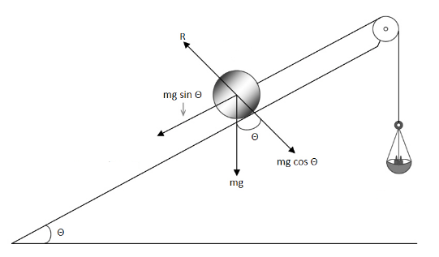

कार्यविधि ( वास्तविक प्रयोग )
- चित्र में दिखाए अनुसार आनत समतल, रोलर तथा पलड़े पर द्रव्यमानों को व्यवस्थित कीजिए।
- यह सुनिश्चित कीजिए कि घिरनी घर्षणहीन हो । यदि आवश्यक हो तो इसका स्नेहन कीजिए।
- मान लीजिए आरंभ में W को इस प्रकार समायोजित करते हैं कि रोलर आनत समतल के शीर्ष पर विराम की स्थिति में ठहरे।
- पलड़े से लघु चरणों में द्रव्यमानों को उस समय तक घटाइए जब तक कि रोलर नियत वेग से आनत समतल पर लुढ़कना आरंभ नहीं करता ।
- भार W तथा θ को भी नोट कीजिए। जैसे ही रोलर नीचे की ओर लुढ़कना आरम्भ करता है उस स्थिति में बल निर्देशक आरेख चित्र में दर्शाया गया है,
θ के विभिन्न मानों के लिए चरण 2 व 3 को दोहराइए । - प्रेक्षणों को सारणी में नोट कीजिए ।

कार्यविधि ( सिमुलेशन )
- सिमुलेशन को प्ले करिये।
- स्लाइडर की मदद से आनति कोण ( Angle of Inclination ) को किसी निश्चित कोण पर धीरे-धीरे सेट करिये। चूँकि लोड पर शुरूआती भार शुन्य है, आप देखेंगे की रॉलर आनत समतल पर निचे लुढ़क रहा है।
- अब स्लाइडर की मदद से लोड पर द्रव्यमान ( Mass on Load ) को उतना बढाइये जिससे की रोलर संतुलित होकर विराम अवस्था में आ जाएं।
- आनति कोण ( θ ), लोड पर द्रव्यमान ( Mass on Load ) के मान को सारणी में नोट करें।
- रिसेट बटन के द्वारा सिमुलेशन को पुनर्व्यवस्थित करिये।
- आनति कोण ( θ ) के विभिन्न मानों के लिए चरण 1 से 5 तक पुनः दोहराइये।
- सिमुलेशन कही रुक जाने की स्थिति में रिसेट करके पुनः प्रयोग आरम्भ करिए।